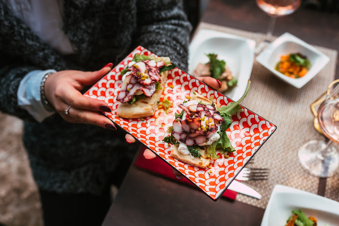
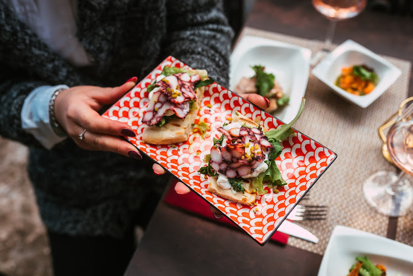

Il nostro locale
Il nostro locale sorge in una chiesetta sconsacrata del 1700 in piazza Padre de Pergola, vicino alla bellissima scuola media G.Carducci e al corso principale della nostra amata città, Corso Vittorio Emanuele II. Il nostro menu si rifà alla tradizione barese, ma ovviamente, abbiamo messo un po' del nostro per renderlo ancora più sfizzioso'. Abbiamo dei tavoli all'aperto, al chiuso e un balconcino per due con una vista meravigliosa sul lontano Castello Svevo e la città Vecchia di Bari. Siamo aperti tutti i giorni dalle 7:00 alle 2:00, venite a trovarci.

 
